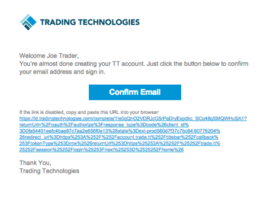
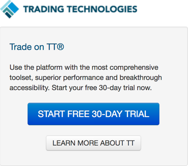
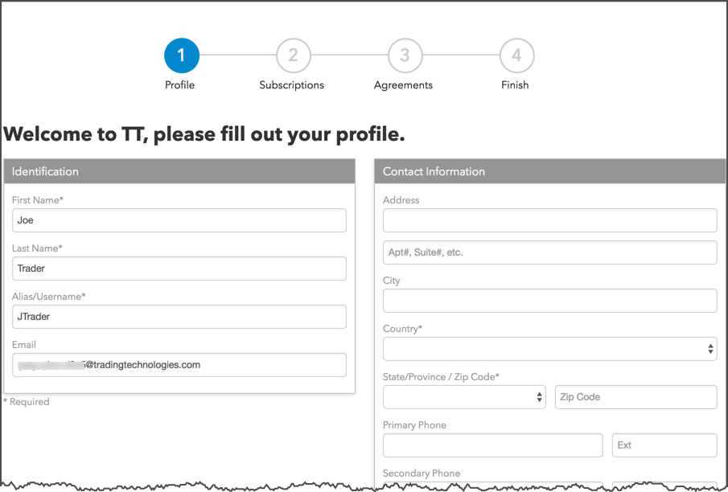
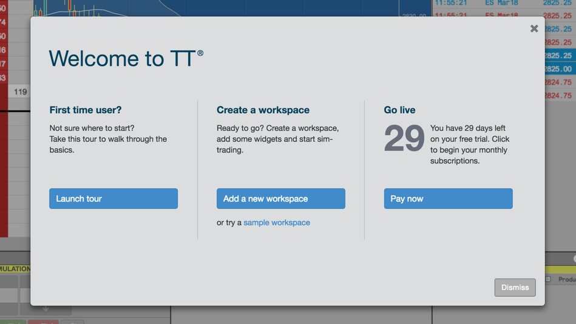

In the NEW USER? section of THE TT PLATFORM page, enter your email address and click CREATE ACCOUNT.

Complete the account creation form and click CREATE ACCOUNT.

Passwords must be a minimum of twelve characters and include three of the following:
- A lowercase letter
- An uppercase letter
- A number
- A special character
After creating an account, you'll receive an email requesting you to "Confirm Email". Check your junk and spam folders for the email if you do not receive it immediately.

Click START FREE 30-DAY TRIAL.

After accepting the agreement, you may receive an invite to access the TT environment for a 30-day free trial period if you have not accepted an invitation to join a production trading company (e.g., FCM).
Complete each step of the sign up process:

- Profile — Enter your name and contact information.
- Subscriptions — Select your TT plan and markets.
Note: By default, you have access to market data in the delayed environment. To access live market data in Simulation for a market, select the market on the "Subscription" tab and accept the exchange's market data agreement on the "Agreements" tab.
- Agreements — Review, accept, and confirm your market data and exchange agreements.
- Finish — Review your subscriptions and access the TT platform.
When you start your free trial, the Trade application opens and the following menu is displayed.

Use this menu to tour the interface, open a workspace to begin trading in the simulation or delayed prices environment, or become a paid TT user.